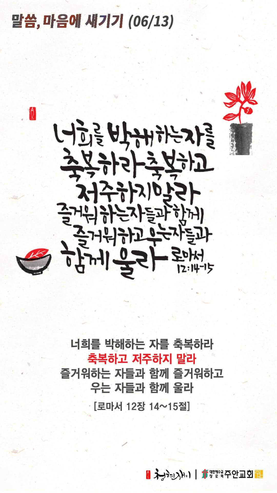

온라인 기도실 안내
2021년 06월13일(일)~06월19일(토)
- 온라인 기도실은 온 회중이 함께 주님 앞으로 나아가는 자리입니다
- 30분 정도 여유를 가지고 하시기 바랍니다
- 말씀과 묵상, 찬양과 기도로 나아갑니다
- 배경 음악이 나올 수 있습니다 볼륨을 조절해주세요
준비가 되셨으면 아래의 버튼을 눌러주세요
할렐루야
내 영혼아 여호와를 찬양하라
시 146:1
- 가사를 묵상하며 읽습니다
여호와 우리 주여
주의 이름이 온 땅에
어찌 그리 아름다운지요
어찌 그리 아름다운지요
여호와 우리 주여
주의 이름이 온 땅에
어찌 그리 아름다운지요
어찌 그리 아름다운지요
할렐루야
내 영혼아 여호와를 찬양하라
시 146:1
- 가사를 묵상하며 읽습니다
주의 손가락으로
만드신 주의 하늘과
주의 베풀어두신 달과
별 내가 보오니
사람이 무엇 이관대
주께서 저를 생각하시며
인자가 무엇 이관대
저를 권고 하시나이까
할렐루야
내 영혼아 여호와를 찬양하라
시 146:1
- 가사를 묵상하며 읽습니다
여호와 우리 주여
주의 이름이 온 땅에
어찌 그리 아름다운지요
어찌 그리 아름다운지요
선포하라 선하신 주
주의 인자는 영원함이라
선포하라 선하신 주
주의 인자는 영원함이라
할렐루야
내 영혼아 여호와를 찬양하라
시 146:1
여호와, 우리 주여 by 김윤진 간사
위의 찬양이 끝나면 말씀읽기를 눌러주시면 됩니다
주의 말씀은 내 발에 등이요
내 길에 빛이니이다 (시119:105)
오늘의 말씀입니다
음악 소리가 크면 조절하시기 바랍니다

마음의 묵상
롬 12:14-15
“너희를 박해하는 자를 축복하라 축복하고 저주하지 말라 즐거워하는 자들과 함께 즐거워하고 우는 자들과 함께 울라”
1. 당신의 요즘 마음 상태는 어떠한가요? 평안하신가요?
2. 당신을 힘들게 하는 사람들에 대해 어떤 마음을 가지고 계신가요?
3. 마음에 여유를 가지고 주변 사람들과 공감하고 계신가요?
저의 마음에 사랑과 평안을 주소서
회개, 삶의 방향을 바꾸는 결정
진실된 회개의 고백을 주께서 들으십니다
“그러므로 내가 스스로 거두어들이고 티끌과 재 가운데에서 회개하나이다”
- 욥기 42:6 -
3분 정도 회개하며 주님 앞에 나아갑니다
사슴이 시냇물을 찾기에 갈급함 같이
시42:1
- 다음의 말씀을 소리 내어 읽습니다
[빌립보서 4장 6-7절]
6 아무 것도 염려하지 말고 다만 모든 일에 기도와 간구로, 너희 구할 것을 감사함으로 하나님께 아뢰라
7 그리하면 모든 지각에 뛰어난 하나님의 평강이 그리스도 예수 안에서 너희 마음과 생각을 지키시리라
하나님 나라
1. 하나님의 나라가 속히 이 땅에 임하게 하소서
하나님 아버지,
전 세계 모든 성도들이 하나님의 창조 세계를 돌보는 일에 앞장 서며, 환경을 보호하는 선한 역할을 감당하게 하소서. 창조세계를 돌보고 다스리라는 하나님의 명령에 순종하며 모든 만물이 창조된 모습 그대로 하나님을 예배하도록 돕게 하소서.
간절한 마음으로 3분 정도 기도합시다
남과 북
2. 남북한이 속히 복음으로 통일되게 하소서
하나님 아버지,
북한 주민들의 생각과 사고가 변화되게 하시고, 민주주의와 자유에 대한 갈망을 더하여 주소서. 북한 전역에 복음이 다양한 모습으로 전파되어, 그 땅에 세워진 모든 우상들이 무너지게 하시고, 한반도에 하나님의 나라가 확장되게 하소서.
간절한 마음으로 3분 정도 기도합시다
대한민국
3. 우리나라가 하나님을 경외하는 나라가 되게 하소서
하나님 아버지,
음란과 쾌락의 영에 사로잡혀서 성범죄를 저지르는 이들이 회개하게 하시고, 이 땅에서 성범죄가 사라지게 하소서. 이들로 인하여 피해를 입은 사람들과 그 가족들에게 하나님의 위로와 회복이 부어지게 하시고, 거룩하신 성령께서 우리 민족 가운데 충만히 임재하사 이 땅에 거룩을 회복시켜 주소서.
간절한 마음으로 3분 정도 기도합시다
한국교회
4. 한국교회가 성령으로 새롭게 부흥되게 하소서
하나님 아버지,
이 땅 가운데 이단이 더 이상 발을 못 붙이도록 하시고, 더 많은 이들이 이단의 허상을 깨닫고 그 곳에서 나오게 하소서. 이단에서 탈퇴한 이들을 긍휼히 여겨주시고, 이들이 올바른 교회 공동체에 들어가서, 그곳에서 참된 복음의 진리를 깨달아 살아계신 주님을 만나게 하소서.
간절한 마음으로 3분 정도 기도합시다
주안교회
5. 주안교회가 다음 세대를 세우는 선교적 교회가 되게 하소서
하나님 아버지,
하나님께서는 언제나 우리가 구하는 것 이상의 더 놀라운 것으로, 더 좋은 것으로, 최상의 것으로 응답하시는 분이심을 믿음으로 바라보고 끈기있게 기도하는 성도들이 되게 하소서. 더 나아가 가장 좋은 선물인 성령님의 인도하심 가운데 하나님의 뜻을 깨닫고 그 뜻을 이루어 드리는 복된 삶을 살게 하소서.
간절한 마음으로 3분 정도 기도합시다
감사의 기도
- 오늘 기도를 인도하신 주님께 감사를 올려드립니다
- 아래의 구절을 읽고 주님께 감사의 마음을 올려드립시다
“나의 힘이신 여호와여 내가 주를 사랑하나이다”
- 시편 18장 1절 -
고요한 가운데 잠시 침묵하시기 바랍니다
파송, 세상을 향하여
- 오늘의 온라인 기도를 마쳤습니다
기도를 들으신 주님께서 평안히 가라 하십니다
주님께서 우리와 함께 하시니 두려울 것이 없습니다
새벽을 깨우며
- 새벽기도회 안내입니다